3T Rosten
51Nybygg
Nybygg · Næring · kontor · Kultur · idrettSe bildegalleri
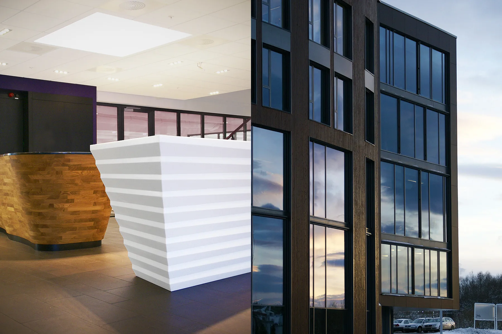
- Byggherre
- 3T Eiendom AS
- Byggeår
- 2009–2010
- Medarbeidere
- Gunnar Stenberg, Phuong Duong, Svein Øvsthus, Astrid Nordmark Dahl, Heidi K. Hynne
Om prosjektet
Et nytt trenings- og kontorbygg samler 3Ts administrasjon, trening, møter og sosiale funksjoner. Arkitektur og interiør er utviklet sammen, med store glassflater og spesialtegnet innredning.
Bilder & tegninger11 bilder


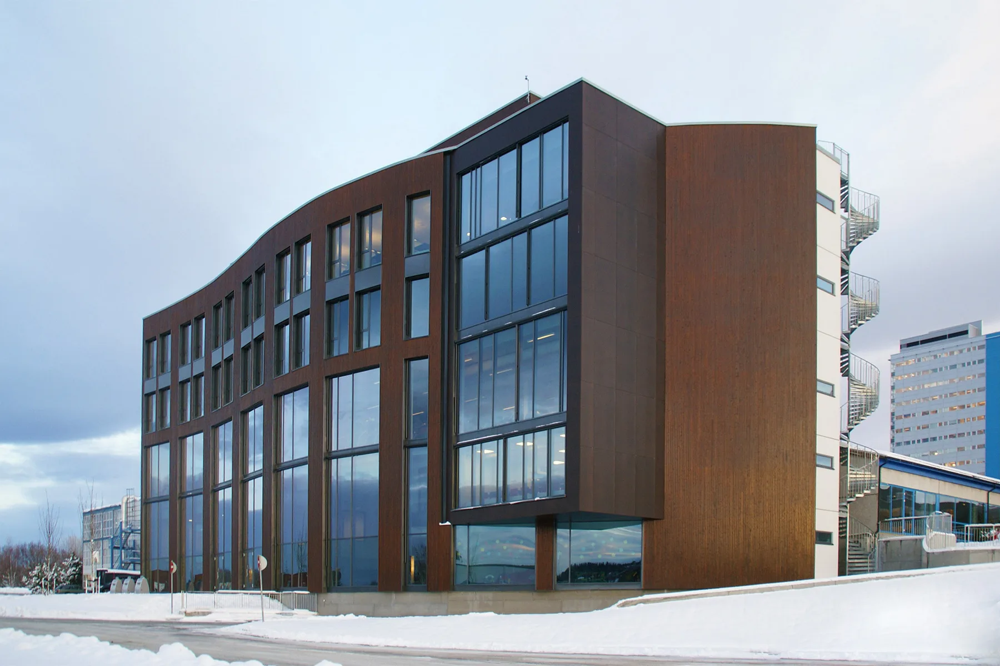
Forstørr
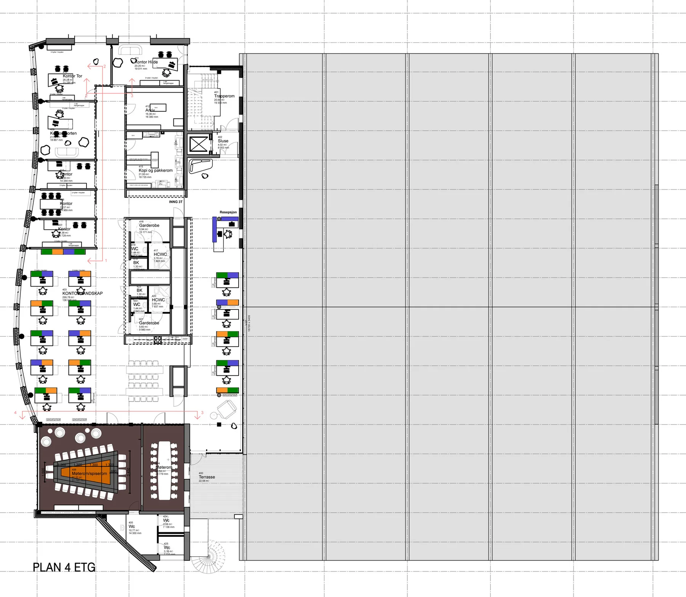
Forstørr
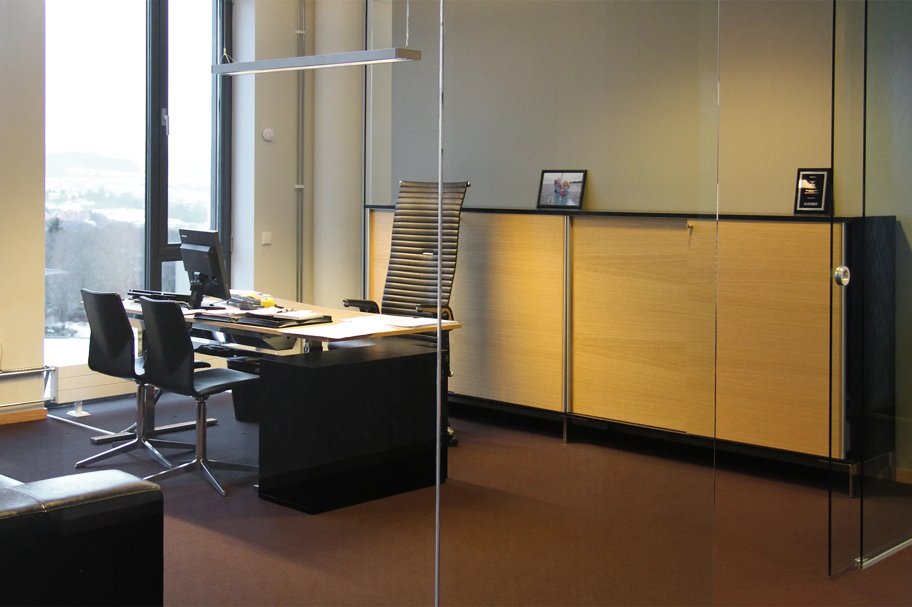
Forstørr
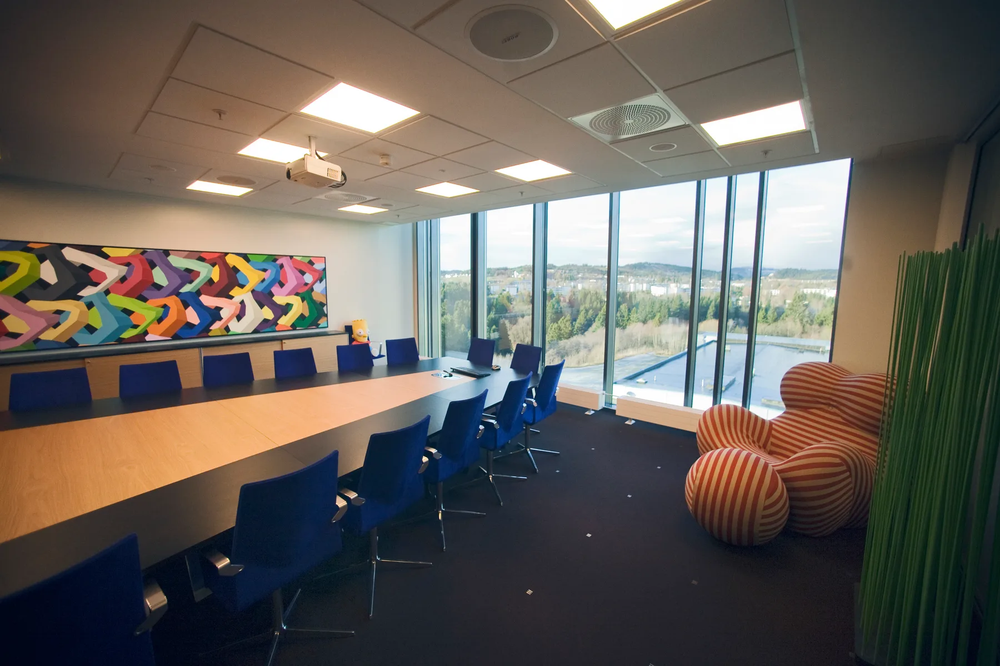
Forstørr
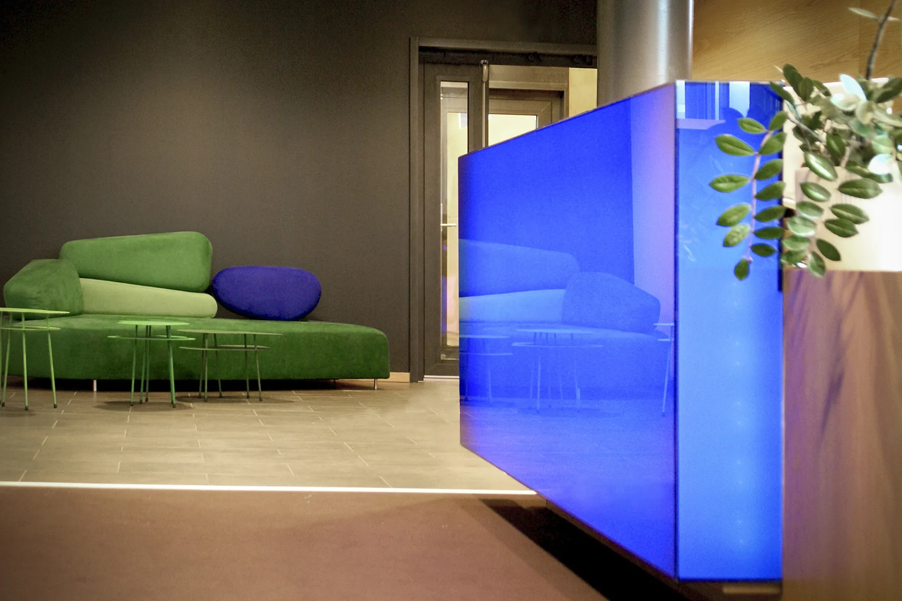
Forstørr
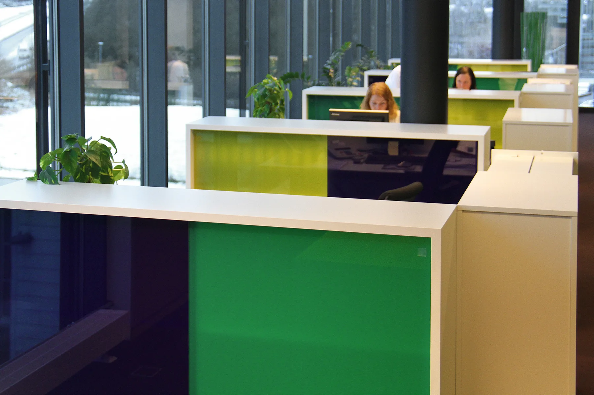
Forstørr
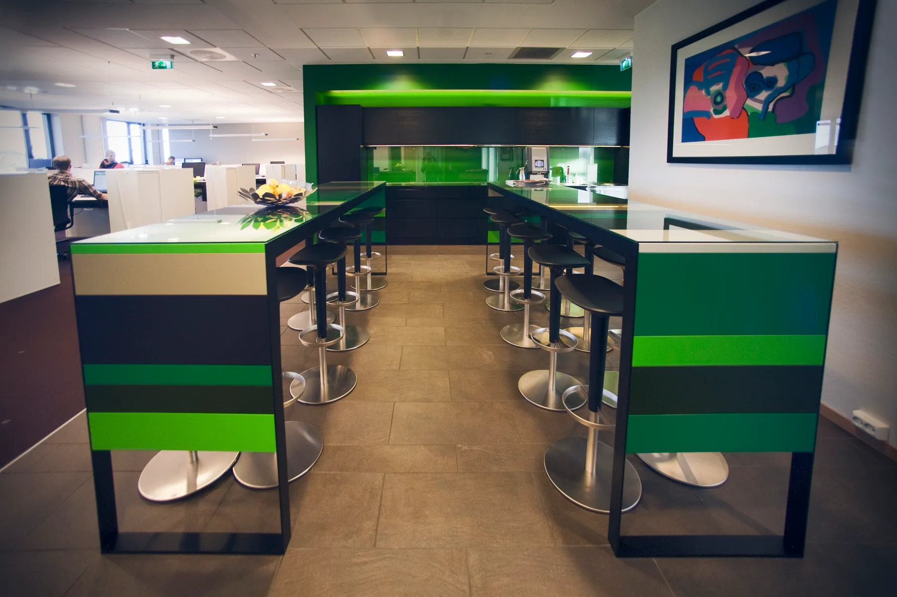
Forstørr
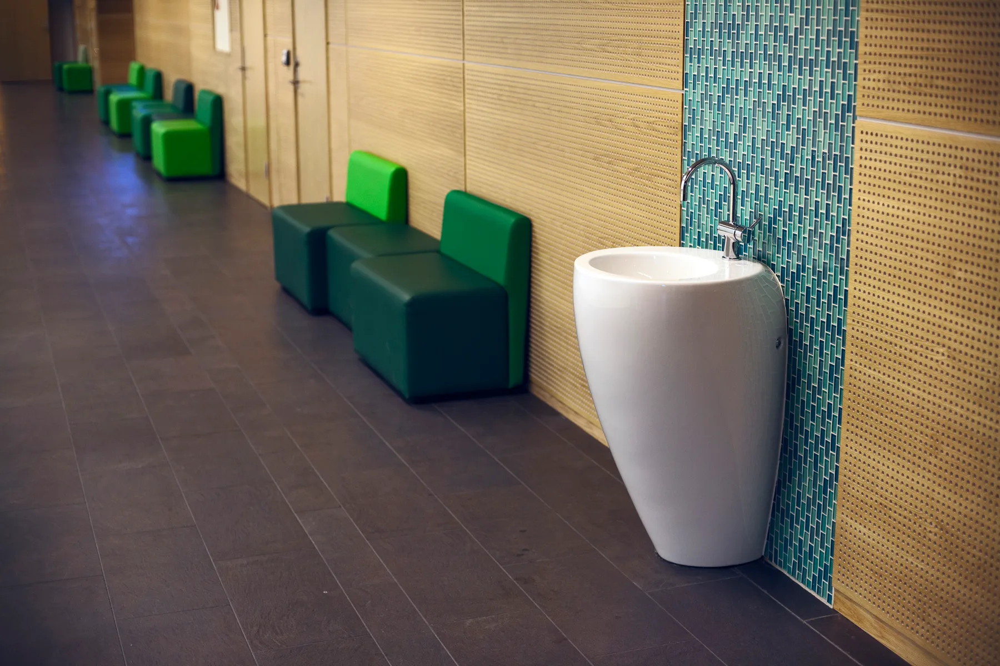
Forstørr
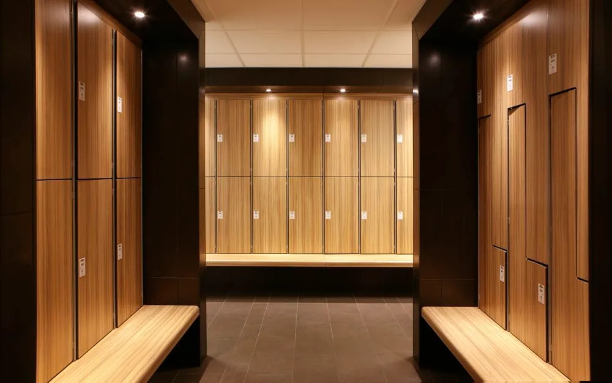
Forstørr
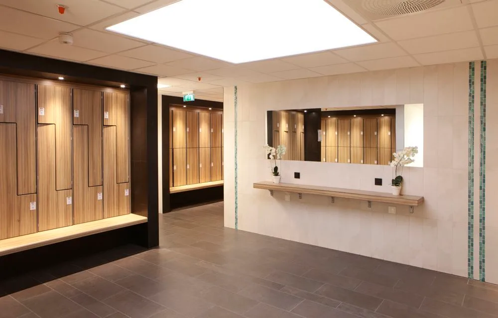
ForstørrDetaljer interiør og eksteriør. Foto og tegninger: Bergersen Arkitekter AS
La oss begynne med en samtale